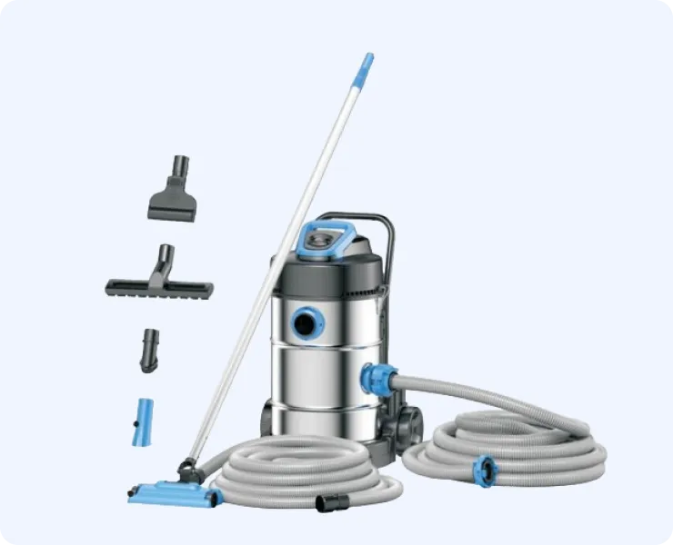

Пылесосы для водоёмов
Пылесос для пруда CPS 101,1700Вт,всас.шл.10м, макс.глуб.2м
Цена и наличие
- 1 шт.1 961 BYN / шт.В наличии
Данные на 23.11.2026.
Характеристики
- Бренд
- Grech
- Длина всасывающего шланга
- 10 м
- Длина сливного шланга
- 10 м
- Максимальная глубина
- 2 м
- Особенности
- 5 насадок в комплекте
- Насадка
- 5 штук в комплекте
- Макс. глубина погружения, м
- 2
- Телескопический удлинитель для насадок
- 5 м
- Шланг
- Всасывающий шланг 10 м, Сливной шланг 10 м
- Габаритные размеры Д*Ш*В
- 448 х 400 х 688 мм
- Мощность
- 1700 Вт
- Производитель
- Grech
- Производительность
- 8000 л/ч
- Страна производитель
- Китай
Описание
CPS 101 GRECH - пылесос для пруда. Предназначен для аспирации ила на дне прудов, плавательных бассейнов и прочих водоемов. Для очистки прибрежных зон пруда и донных отложений.
ПЫЛЕСОС ДЛЯ ПРУДА И БАССЕЙНА CPS 101 GRECH Предназначен для аспирации ила на дне прудов, плавательных бассейнов и прочих водоемов. Для очистки прибрежных зон пруда и донных отложений. Эксплуатация оборудования возможна при температуре воды от 4 до 35 °С. Для удобства перемещения оснащен транспортировочной платформой на колесах с ручкой. Быстросъемное подключение сливного шланга с муфтой C-Storz. Встроенный клапан сброса воды, защищающий электронику при превышении мах. уровня воды. Водный пылесос CSP-101 очень легок в использовании и обслуживании, поможет поддерживать чистоту в Вашем пруду, ручье или бассейне. Ил, осадок из пруда, бассейна закачивается в резервуар для воды через всасывающий шланг, а затем сбрасывается за пределы водоема через сливной шланг. Мешок грязеуловителя расположенный в резервуаре для воды собирает крупные частицы грязи, тем самым препятствует засорению или блокированию сливного насоса. При уменьшении мощности всасывания необходимо почистить мешок грязеуловителя. Сливной насос непрерывно выкачивает грязную воду из емкости через сливной шланг.